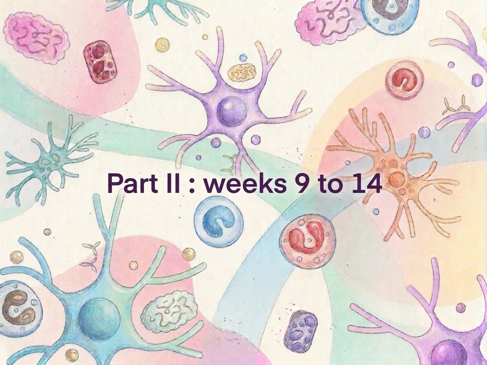

Julia's GENED 1201 Learning Hub
Foundations of NeuroAI
A companion to the lectures. Each week gets its own page with the main ideas, plain-language definitions, examples, and the scientific work behind them.
Control Systems, Reasoning, Attention, and Cognitive Architectures
How does an intelligent system decide what to focus on, hold in mind, and do next, when it can't process everything at once?
This week asks one question from two directions. AI researchers have learned to make language models "think" before they answer. Neuroscientists have mapped the brain networks that keep us on task. The two fields arrived at similar ideas: step-by-step reasoning, limited capacity, and a control system that decides what matters right now.
Part 1: From predicting the next word to reasoning
The starting point
A large language model (LLM) is trained to predict the next token (a word or word piece). Given a question, a basic LLM tends to blurt out its first likely answer. That works for simple questions and breaks down for multi-step ones.
Key ideas
- Greedy decoding
- Generating text by always picking the single most likely next token. Fast, but it can lock in an early mistake.
- Chain of thought (CoT)
- Writing out intermediate steps before the final answer. Showing the work improves multi-step accuracy. Wei et al. (2022) showed that prompting a large model this way unlocks reasoning it otherwise doesn't show.
- Test-time compute
- Spending more computation when answering, usually as hidden "thinking" tokens, rather than making one quick pass. Also called inference scaling.
- Large reasoning model (LRM)
- A model trained to produce long internal reasoning before answering. It differs from a classic LLM mainly in how it was trained to spend tokens on thinking.
- Reinforcement learning (RL)
- Training by trial and reward. The model tries answers, and the ones that earn reward are reinforced. Reasoning models are often trained this way, so good reasoning gets rewarded.
- Verifiable domain
- A task where a program can check whether an answer is right, such as math, code tests, or logic puzzles. These are where RL for reasoning works best, because the reward signal is clean.
- Self-attention
- The transformer mechanism that lets each token weigh how much to draw on every other token in its context. It's a computation inside the model, not the same thing as attention in psychology (see Part 2).
Thinking out loud, in practice
Reasoning models show a "thinking trace" before the final answer. In the box puzzle below, the model reasons through the possibilities, then gives a short answer.
Puzzle. Three boxes are labeled "Apples," "Oranges," and "Apples and Oranges." Every label is wrong. Each box holds only apples, only oranges, or a mix. You may draw one fruit from one box without looking. Which box do you choose, and how does one fruit let you correctly label all three?
Answer. Draw from the box labeled "Apples and Oranges." It can't be a mix, since its label is wrong, so it holds only one kind. If you draw an apple, that box is the Apples box, the Oranges-labeled box must be the mix, and the last box is Oranges. If you draw an orange, the logic flips the same way.
The big idea
Giving a model room to think before it answers, and training it with RL to do so, greatly improves multi-step problem solving. The model is not just recalling an answer. It is searching for a path to one.
The harness: what surrounds the model
A model on its own is a reasoner stuck in a box. A harness is the code and structure around the model that keeps it on track. Its job is to track goals, deliver the right context at the right moment, call tools, draw on memory, and check the work.
The harness is a control loop. It sets a goal, feeds the model what it needs, lets the model act through tools, checks the result, and repeats. Anthropic's engineering team describes the same idea as "context engineering": deciding what information goes into the model's limited window at each step.
Harnesses are not all the same. A coding agent, a research assistant, and a customer chatbot need different goals, tools, and checks. That is why two agent models can behave very differently on the same question.
Part 2: The brain's control systems
Your brain can't process everything at once. Cognitive control is the set of processes that selects what to attend to, holds relevant information in mind, and steers behavior toward a goal, especially when the task is hard or unfamiliar.
The multiple-demand (MD) system
A set of frontal and parietal regions, often called the multiple-demand system, becomes more active as tasks get harder. Duncan (2010) proposed this network as a general-purpose system that supports many kinds of demanding thought.
Fedorenko, Duncan, and Kanwisher (2013) tested this across tasks including math, spatial and verbal working memory, and the Stroop color-word test. Most of the frontal and parietal MD regions responded more strongly to harder conditions in nearly every task, despite the content being completely different. The same regions were also separable from the brain's language network.
Working memory and its limits
Working memory is the small, active store where you hold information for the task at hand. Baddeley and Hitch (1974) framed it as a set of temporary buffers. Its capacity is strictly limited (Miller, 1956, estimated about seven items, though later work suggests fewer for complex items), and it is flexible: it holds whatever the current task needs.
Attention is selection
In cognitive neuroscience, attention means selection. It is the process that prioritizes some information for processing over other information. This is a different idea from self-attention in transformers, which is a weighting computation. The shared name is a source of confusion, and the concepts are worth keeping apart.
Brain imaging shows two broad attention systems. The dorsal attention network (Corbetta and Shulman, 2002) directs attention toward goal-relevant stimuli. The default network is more active during internal thought and when we are not focused on an outside task. Yeo et al. (2011) mapped large-scale networks of this kind across the cortex.
Thought as a series of episodes
Duncan (2013) argues that cognition unfolds as a structured series of attentional episodes. A complex problem is solved by handling simpler subproblems one after another, with a control system bringing in the right resources for each. Duncan (2000) linked the MD system to fluid intelligence, the ability to solve novel problems without relying on previously learned knowledge.
Bringing the two halves together
The AI and biology stories rhyme. Neither field has settled on the final picture, but the parallels are instructive.
| Idea | In AI | In the brain |
|---|---|---|
| Limited capacity | The context window | Working memory |
| Step-by-step solving | Chain of thought, test-time compute | Attentional episodes |
| Control loop | The harness | Cognitive control, MD system |
| Selection | Self-attention weights | Attention as selection |
| Checking work | Verifiable domains and RL rewards | Monitoring for errors and conflict |
The lesson the lecture points to: intelligence on a limited budget depends on what gets selected, what gets held, and what gets checked. Both systems solve this by breaking problems into pieces and managing a scarce resource.
Practice quiz: what it reveals
Each puzzle taxes a different part of the control system. Try them before opening the answers.
1. Water jugs: measure exactly 4 liters
You have a 3-liter jug, a 5-liter jug, and unlimited water. Track each step as (3-liter, 5-liter).
- Fill the 5-liter jug: (0, 5)
- Pour from 5 into 3 until the 3 is full: (3, 2)
- Empty the 3-liter jug: (0, 2)
- Pour the 2 liters into the 3-liter jug: (2, 0)
- Fill the 5-liter jug: (2, 5)
- Top off the 3-liter jug, which takes 1 liter: (3, 4)
Working memory is doing the heavy lifting here: you must hold the current state and the goal in mind across six steps.
2. Card rule: "If a card has a vowel on one side, it has an even number on the other."
Visible: A, D, 4, 7. Which cards must you turn over to test the rule?
Answer: A and 7. A could violate the rule if its back is odd. 7 could violate it if its back is a vowel. D and 4 can't break the rule, because the rule says nothing about what consonants or even numbers must have on the back. This is the Wason selection task (Wason, 1968). Most people pick the 4 instead of the 7, because they look for confirming evidence rather than possible violations.
3. Cube: which 3D shape matches the three views?
Answer: cube (b). Matching the top, side, and front views to a wire-wrapped cube requires holding a 3D model in mind and mentally rotating it, a classic demand on working memory and spatial reasoning.
Glossary
- Attention
- In neuroscience and psychology: selecting some information for processing over other information.
- Attentional episode
- A bounded stretch of processing focused on one subproblem, as proposed by Duncan (2013).
- Chain of thought
- Step-by-step written reasoning that leads to an answer.
- Cognitive control
- The processes that guide thought and action toward goals, especially when tasks are hard or conflicting.
- Context window
- The amount of text a model can consider at once. It is the model's working memory.
- Default network
- Brain regions more active during internal thought and rest than during focused outside tasks.
- Dorsal attention network
- Brain regions that direct attention toward goal-relevant stimuli.
- Domain-general vs. domain-specific
- Domain-general systems work across any content. Domain-specific systems handle one kind, such as vision, language, or motor control.
- Fluid intelligence
- The ability to reason and solve novel problems without relying on prior knowledge.
- Greedy decoding
- Always choosing the single most probable next token.
- Harness
- The code and structure around a model that manages goals, context, tools, memory, and checks.
- Large language model (LLM)
- A model trained to predict the next token in text.
- Large reasoning model (LRM)
- A model trained to produce extended internal reasoning before answering.
- Multiple-demand (MD) system
- Frontal and parietal regions that are active across many demanding tasks and tied to fluid intelligence.
- Reinforcement learning (RL)
- Learning from rewards for outcomes, so that successful behaviors become more likely.
- Self-attention
- A transformer mechanism for weighting relationships between tokens. Not the same as psychological attention.
- Test-time compute
- Computation spent at answer time, such as generating reasoning tokens.
- Verifiable domain
- A task where correctness can be checked automatically.
- Working memory
- A limited, flexible store for information needed in the current task.
Check yourself
Facts to know
Questions to think about
Sources
Works cited on this page and in lecture.
- Wei, J., Wang, X., Schuurmans, D., et al. (2022). Chain-of-thought prompting elicits reasoning in large language models. NeurIPS.
- DeepSeek-AI (2025). DeepSeek-R1: Incentivizing reasoning capability in LLMs via reinforcement learning. arXiv.
- Zhou, D. Lecture on LLM reasoning, Stanford CS25 (Google DeepMind).
- Karpathy, A. (2025). Deep dive into LLMs like ChatGPT. Video lecture.
- Korbak, T., et al. (2025). Chain of thought monitorability: A new and fragile opportunity for AI safety. Position paper.
- Anthropic Engineering (2025). Effective context engineering for AI agents.
- Duncan, J. (2010). The multiple-demand (MD) system of the primate brain. Trends in Cognitive Sciences.
- Fedorenko, E., Duncan, J., & Kanwisher, N. (2013). Broad domain generality in focal regions of frontal and parietal cortex. PNAS.
- Duncan, J. (2013). The structure of cognition: Attentional episodes in mind and brain. Neuron.
- Duncan, J., et al. (2000). A neural basis for general intelligence. Science.
- Baddeley, A. D., & Hitch, G. (1974). Working memory. Psychology of Learning and Motivation.
- Miller, G. A. (1956). The magical number seven, plus or minus two. Psychological Review.
- Corbetta, M., & Shulman, G. L. (2002). Control of goal-directed and stimulus-driven attention in the brain. Nature Reviews Neuroscience.
- Yeo, B. T. T., et al. (2011). The organization of the human cerebral cortex estimated by intrinsic functional connectivity. Journal of Neurophysiology.
- Vaswani, A., et al. (2017). Attention is all you need. NeurIPS.
- Wason, P. C. (1968). Reasoning about a rule. Quarterly Journal of Experimental Psychology.
Week 10
Loading…
This week's page is being prepared. Its content will appear here once the lecture materials are added.
Flashcards
14 cards: 8 lecture questions and 6 key terms. Tap a card to see the answer.
What does a harness do on top of a base LLM or LRM?
Tracks goals, delivers the right context at each step, calls tools, draws on memory, and checks results.
How is a large reasoning model different from a classic LLM?
An LLM predicts the next token. An LRM is trained with reinforcement learning to produce extended reasoning before answering.
What is chain of thought reasoning?
Writing intermediate steps before the final answer. Wei et al. (2022) showed this unlocks multi-step reasoning in large models.
What are the multiple-demand regions, and what evidence links them to domain-general processing?
Frontal and parietal regions that respond more strongly to harder tasks across domains (Fedorenko, Duncan & Kanwisher, 2013). They are linked to fluid intelligence (Duncan et al., 2000).
What is the key property of attention in cognitive neuroscience?
Selection: prioritizing some information for processing over other information.
What is a task-dependent representational space, and how is it flexible?
The way information is encoded depends on the current task, so the same input is represented differently for different goals.
Why might different agent models behave differently on the same query?
They differ in reasoning training (RL post-training), how much test-time compute they use, and their harness (goals, tools, checks).
Should AI systems be designed with different harnesses for different purposes?
Likely yes, since the harness should fit the task. Whether one ideal harness exists for general intelligence is open.
Verifiable domain
A task where a program can check the answer automatically, such as math, code tests, or logic. RL for reasoning works best here.
Greedy decoding
Always picking the single most likely next token. Fast, but it can lock in an early mistake.
Self-attention
A transformer mechanism where each token weighs every other token in context. Not the same as attention in psychology.
Working memory
A limited, flexible store that holds information needed for the current task.
Fluid intelligence
The ability to reason and solve novel problems without relying on prior knowledge.
Test-time compute
Computation spent when answering, such as generating hidden reasoning tokens, rather than one quick pass.